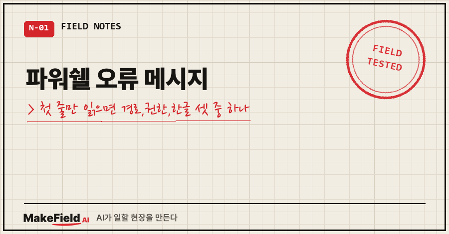
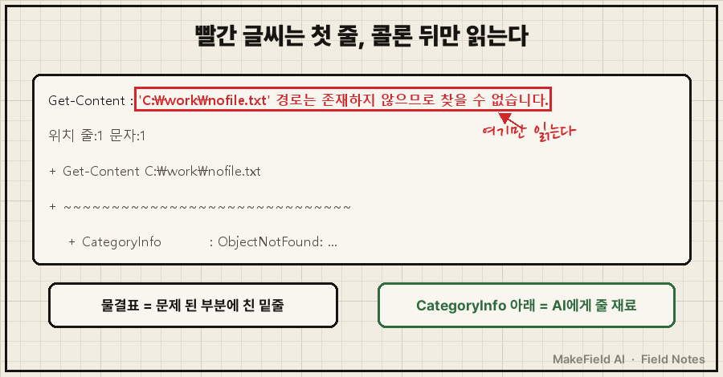
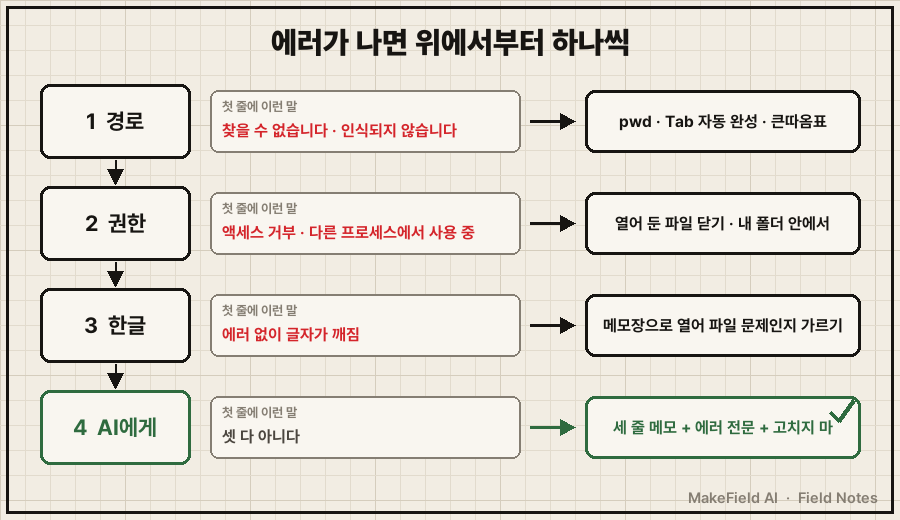
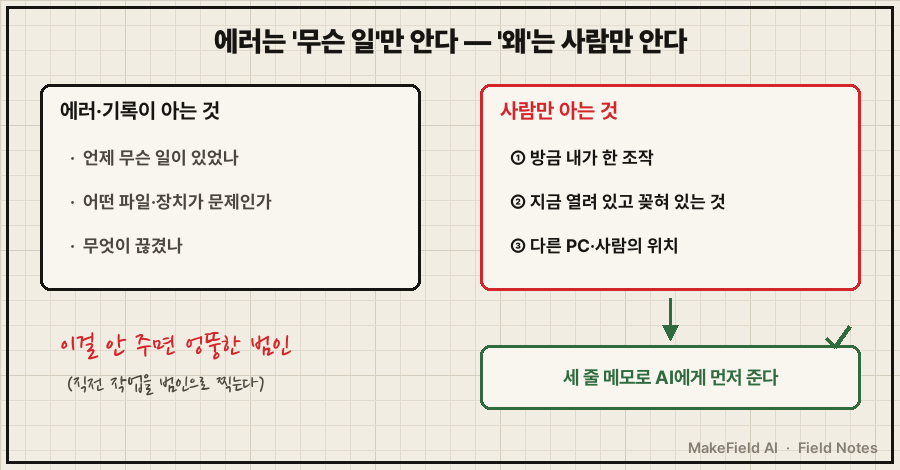

명령 하나 쳤을 뿐인데 빨간 글씨가 화면 반을 채웁니다.
영어 반, 한글 반, 중간엔 물결표(~~~~)까지.
대부분 이 장면에서 창을 닫아요.
결론부터 드릴게요. 파워쉘 오류 메시지는 첫 줄의 콜론(:) 뒤만 읽으면 되고, 이 연재에서 하는 일로 만나는 에러는 대부분 '경로·권한·한글' 셋 중 하나입니다. 컴퓨터가 망가진 게 아니라 터미널이 "이건 못 하겠다"고 이유를 적어 준 거예요. 셋 다 아니면 그때 AI에게 묻는데, 묻는 순서를 틀리면 AI 진단이 엉뚱한 데로 갑니다.
지난 편에서 AI에게 내 폴더를 처음 읽혔어요. 이번 편은 그 과정에서 뭔가 막혔을 때 위에서부터 보는 순서표 하나를 만듭니다.
저는 산업 설비 제어 시스템을 15년 넘게 만져 온 엔지니어예요. 현장에서도 계기판 숫자보다 "아까 제가 이거 눌러봤는데요" 한마디가 원인에 더 빨리 데려다주곤 했어요.
1. 파워쉘 오류 메시지, 어디부터 읽어야 하나요?
첫 줄, 그것도 콜론 뒤만 읽으면 됩니다. 거기가 '무슨 일이 났는지'예요. 아래쪽 영어는 해석할 필요가 없고, 나중에 AI에게 그대로 붙여 넣을 재료입니다.
없는 파일을 열라고 시키면 이렇게 나와요. (2026년 9월, 한국어 윈도우 10 기본 파워셸 5.1에서 실제로 띄운 문구예요. 판이 달라도 핵심 단어는 같습니다)
Get-Content : 'C:\work\nofile.txt' 경로는 존재하지 않으므로 찾을 수 없습니다.
위치 줄:1 문자:1
+ Get-Content C:\work\nofile.txt
+ ~~~~~~~~~~~~~~~~~~~~~~~~~~~~~~
+ CategoryInfo : ObjectNotFound: ...
2. 오늘 만들 것 — 모니터 옆에 붙일 자가진단 순서표
에러가 나면 위에서부터 한 줄씩 봅니다. 첫 줄에 이런 말이 있으면 그 줄이에요.
| 순서 | 의심할 것 | 첫 줄에 이런 말이 있으면 | 이렇게 푼다 |
|---|---|---|---|
| 1 | 경로 | 찾을 수 없습니다 / 인식되지 않습니다 / 위치 매개 변수를 찾을 수 없습니다 | 폴더로 먼저 들어가기, 띄어쓰기 있는 경로는 큰따옴표 |
| 2 | 권한 | 액세스가 거부되었습니다 / 다른 프로세스에서 사용 중 / 스크립트를 실행할 수 없으므로 | 파일 닫기, 내 폴더에서 작업, 실행 정책 한 줄 |
| 3 | 한글 | 에러는 없는데 글자가 깨져 나온다 | 메모장으로 열어 파일 문제인지 가르기 |
| 4 | 그래도 모르겠다 | — | 세 줄 메모 + 에러 전문을 AI에게 |

3. 따라하기 — 셋 중 어디인지 가르는 법
경로일 때. 제일 흔해요. 먼저 지금 어느 폴더에 있는지부터 봅니다.
pwd그다음 경로는 직접 다 치지 말고 앞 몇 글자만 친 뒤 Tab을 누르세요. 자동 완성이 안 되면 그 이름은 거기 없는 겁니다. 이게 제일 빠른 판별법이에요.
"'ace' 인수를 허용하는 위치 매개 변수를 찾을 수 없습니다"처럼 낯선 단어가 튀어나오면 띄어쓰기에서 경로가 두 조각으로 끊긴 거예요. 경로 전체를 큰따옴표로 감싸면 됩니다.
cd "C:\내 문서\2026 가계부""… 인식되지 않습니다"는 철자 오타거나 설치 직후 창을 새로 안 연 경우라, 터미널을 다시 여는 것부터 합니다.
권한일 때. "다른 프로세스에서 사용 중"이면 범인은 거의 항상 내가 열어 둔 엑셀이나 워드예요. 그 파일을 닫고 다시 시키면 됩니다.
"액세스가 거부되었습니다"에서 관리자 권한부터 찾는 분이 많은데, 그 전에 AI가 지금 내 작업 폴더 밖, 예를 들어 C:\Windows 같은 곳에 쓰려고 하는 건 아닌지부터 보세요. 대부분 AI가 엉뚱한 폴더로 간 경우라, 경로가 왜 거기로 갔는지 AI에게 묻는 게 먼저입니다.
"스크립트를 실행할 수 없으므로"는 윈도우가 기본값으로 .ps1 실행을 막아 둔 거예요. 마이크로소프트 공식 문서 방식대로 내 계정에만 풀어 줍니다.
Set-ExecutionPolicy -ExecutionPolicy RemoteSigned -Scope CurrentUser관리자 창과 실행 정책의 차이는 파워쉘 실행 편에 정리했어요. 이 한 줄도 막히면 전산팀이 정책으로 잠근 거라 우회하지 말고 물어보세요.
한글일 때. 에러는 없는데 결과가 寃ъ쟻???처럼 깨지면 파일을 메모장으로 열어 보세요. 메모장에선 멀쩡하면 파일은 정상이고 보여 주는 쪽 문제, 메모장에서도 깨지면 AI에게 "UTF-8로 다시 저장해줘"라고 하면 됩니다. 스크립트 실행까지 실패했던 사례는 PowerShell 한글 깨짐 편에 있어요.
4. 그래도 모르겠으면 AI에게 — 에러보다 세 줄을 먼저
AI는 에러 해석을 정말 잘해요. 다만 묻는 방법에 따라 진단이 정반대로 나옵니다. 그래서 저는 아래 양식을 그대로 붙여 넣어요.
[상황 세 줄]
① 방금 내가 직접 한 조작 : (예: 가계부 엑셀을 열어 둔 채 AI에게 수정을 시켰다)
② 지금 열려 있는 것 : (예: 엑셀 2개, 동기화 프로그램 1개)
③ 같이 쓰는 사람·다른 PC : (예: 같은 파일을 노트북에서도 연다)
[내가 친 명령] (그대로 복사)
[지금 폴더] (pwd 결과 그대로)
[에러 전문] (첫 줄부터 끝 줄까지 전부. 캡처보다 글자로)
위 정보로 원인 후보를 가능성 높은 순서로 3개 적어줘.
각 후보마다 내가 확인할 방법을 하나씩 붙여줘. 아직 아무것도 고치지 마.에러 전문은 났을 때 바로, 글자로 복사하세요. 캡처는 잘리기 쉽고 창을 닫으면 다시 못 찾아요. 마지막 줄 "아직 아무것도 고치지 마"는 AI가 곧장 손대기 전에 가설부터 내놓게 하는 장치입니다.
클로드 코드로 설명했지만 GPT의 Codex CLI, 구글 Gemini CLI에 붙여 넣어도 똑같이 통해요. 양식은 도구가 아니라 사람이 채우는 칸이라서요.
5. 여기서 이렇게 틀립니다 — AI가 "제가 방금 바꾼 것 때문입니다"라고 할 때
작업 중에 무언가 끊기면 AI가 자백 모드로 들어갈 때가 있어요. "제가 방금 한 설정 때문입니다, 되돌리겠습니다." 그 말대로 되돌리고, 또 이것저것 바꿔도 안 풀립니다.
제가 그랬어요. 집에 켜 둔 노트북을 밖에서 원격으로 쓰다가 AI와 공유기 설정을 정리하던 중 연결이 끊겼고, AI는 자기 작업을 범인으로 찍었습니다. 그런데 연결 상태를 재 보니 끊기기 전엔 같은 공유기로 왕복 1ms, 끊긴 뒤엔 바깥 망으로 8ms였어요. 그 노트북을 제가 들고 집 밖으로 나간 거였습니다.. 같은 점검에서 AI가 "하드웨어 고장"이라던 비정상 종료 2건도, 사실은 화면이 안 들어와 제가 전원 버튼을 길게 눌러 끈 기록이었고요. 이 세 번 뒤집힌 얘기는 AI 원인 분석 오류 편에 자세히 적었어요.
AI가 틀린 게 아니라 정보가 없었던 거예요. 에러와 기록은 '무슨 일'은 남겨도 '왜'는 안 남깁니다.
| 에러·기록이 아는 것 | 모르는 것 | 안 적어 주면 생기는 일 |
|---|---|---|
| 언제 무슨 일이 있었나 | 내가 왜 그랬나 | 내가 한 조작을 고장으로 읽는다 |
| 어떤 파일·장치가 문제인가 | 지금 뭐가 열려 있고 꽂혀 있나 | 쓰지도 않는 것을 의심한다 |
| 무엇이 끊겼나 | 다른 사람·다른 PC가 어디서 뭘 하나 | 직전 작업을 범인으로 찍는다 |

그래서 순서를 바꿨어요. AI의 첫 결론은 가설로만 받고, 내가 아는 사실과 부딪히는지만 봅니다. 세 번 다 그 부딪히는 자리에서 원인이 잡혔어요.
6. 자주 묻는 질문
Q. 관리자 권한으로 열면 다 해결되지 않나요?
"액세스가 거부되었습니다"의 대부분은 AI가 내 작업 폴더 밖으로 나간 경우예요. 관리자 권한은 그 실수를 막지 않고 더 넓게 허락해 버립니다. 경로부터 확인하세요.
Q. 같은 에러가 또 나면요?
메모장 한 파일에 "날짜 / 에러 첫 줄 / 원인 / 푼 방법" 네 칸으로 한 줄씩 적어 두세요. 두 번째부터는 이 한 줄이 검색보다 빠릅니다.
빨간 글씨를 보고 창을 닫는 대신 첫 줄 하나만 읽으셨다면 1부는 여기까지 끝이에요. 다만 이렇게 하다 보면 AI에게 매번 "읽기만 해", "작업 폴더 안에서만 해"를 다시 말하게 되는데, 그 반복을 없애는 지침 파일을 다음 편부터 다룹니다.
이 글은 『직장인의 AI 오답 노트』 1-6장을 블로그용으로 다시 쓴 것입니다. 같은 증상의 원인과 점검표 전체는 책에 있어요. 종이책 예스24 https://www.yes24.com/product/goods/198006547 · 종이책 알라딘 https://www.aladin.co.kr/shop/wproduct.aspx?ItemId=404397482 · 전자책 예스24 https://www.yes24.com/product/goods/197975471